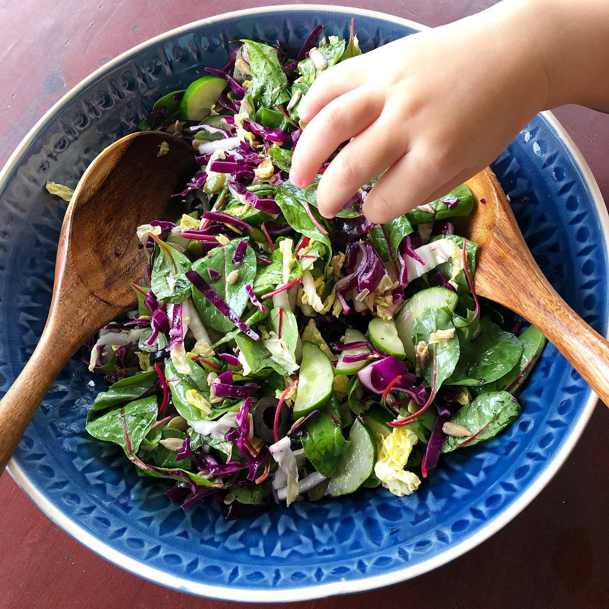

Just simple salad but such a great combination of colours and fresh taste that even little one couldn’t resist and tried a bit 😋 ➖purple cabbage ➖Chinese cabbage ➖chard leaves ➖cucumber ➖ black olives ➖ pumpkin and sunflower seeds ➖ extra virgin olive oil ➖ Apple cider vinegar ➖ salt and pepper to your taste ___ #saladoftheday #saladbowl #salad #veganrecipes #veganfoodshare #eatyourveggies #plantbasedrecipes #plantbaseddiet #foodblogfeed #feedfeed #thrivemags #onmyplate #timeoutsg #buzzfeedfood #buzzfeedtasty #singapore #sgfoodie #foodsg #food52
2020-09-13 16:46:00
Back to main page